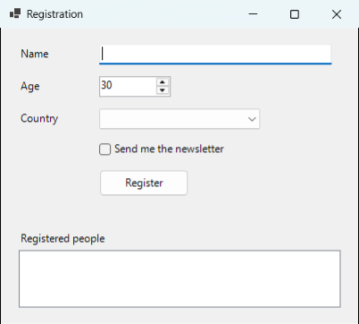
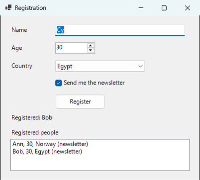

Tutorial 12: A form with many controls
Build a registration form with text boxes, a number box, a combo box, a check box and a list box, read what the user typed, and check it before accepting.
What you will learn#
- the common controls and their main properties,
- reading and changing what the user entered,
- validating input and giving feedback,
- finding controls in
Controlsfor tests.
The common controls#
| Control | The user... | Main property |
|---|---|---|
Label | reads text | Text |
TextBox | types text | Text |
NumericUpDown | picks a number | Value, Minimum, Maximum |
ComboBox | picks one item of a drop-down list | SelectedIndex, Text |
CheckBox | switches something on or off | Checked |
ListBox | sees (and picks from) a list | Items, SelectedIndex |
Button | clicks | Text, event Click |
The program#
# Tutorial 12: a form with many controls - text boxes, check box, combo box, list box, validation
load "dotnet.ring"
dnUseDesktop()
using {
"System.Drawing"
"System.Windows.Forms"
}
# controls that the event code uses are global variables
oForm = ""
oName = ""
oAge = ""
oCountry = ""
oNewsletter = ""
oResult = ""
oPeople = ""
func main
oForm = uiForm("Registration",400,330)
uiLabel(oForm,"Name",20,20,80,22)
oName = uiTextBox(oForm,110,18,260,24)
uiLabel(oForm,"Age",20,56,80,22)
oAge = new NumericUpDown() {
Location = new Point(110,54)
Size = new Size(80,24)
Minimum = 1
Maximum = 120
Value = 30
}
oForm.Controls.Add(oAge)
uiLabel(oForm,"Country",20,92,80,22)
oCountry = uiComboBox(oForm,110,90,180,["Egypt","Norway","Japan","Brazil"])
oCountry.SelectedIndex = -1 # nothing chosen yet
oNewsletter = uiCheckBox(oForm,"Send me the newsletter",110,124,200,24,"")
uiButton(oForm,"Register",110,158,100,30,"register()")
oResult = uiLabel(oForm,"",20,196,360,22)
uiLabel(oForm,"Registered people",20,226,150,20)
oPeople = uiListBox(oForm,20,248,360,70)
uiTest(oForm,"selfTest()")
uiRun(oForm)
uiEnd()
func register
cName = trim(oName.Text)
if cName = ""
oResult.Text = "Please type a name"
return
ok
if oCountry.SelectedIndex < 0
oResult.Text = "Please choose a country"
return
ok
cLine = cName + ", " + oAge.Value + ", " + oCountry.Text
if oNewsletter.Checked
cLine += " (newsletter)"
ok
oPeople.Items.Add(cLine)
oResult.Text = "Registered: " + cName
oName.Text = ""
func selfTest
oForm.Controls.Item(7).PerformClick() # nothing typed yet
dnAssert("name is required",oResult.Text,"Please type a name")
oName.Text = "Ann"
oForm.Controls.Item(7).PerformClick()
dnAssert("country is required",oResult.Text,"Please choose a country")
oCountry.SelectedIndex = 1
oNewsletter.Checked = True
oForm.Controls.Item(7).PerformClick()
dnAssert("registered",oResult.Text,"Registered: Ann")
dnAssert("the list",oPeople.Items.Count,1)
dnAssert("the text",oPeople.Items.Item(0),"Ann, 30, Norway (newsletter)")

SELFTEST OK (5 checks)How it works#
Creating the controls#
The helpers uiTextBox, uiComboBox, uiCheckBox and uiListBox create the control and add it to the form. uiComboBox(oForm, x, y, width, aItems) fills the drop-down list from a Ring list. A NumericUpDown has no helper, so it is created with the class and configured in braces:
oAge = new NumericUpDown() {
Location = new Point(110,54)
Size = new Size(80,24)
Minimum = 1
Maximum = 120
Value = 30
}
oForm.Controls.Add(oAge)The control only appears in the window after oForm.Controls.Add(...).
Reading what was entered#
| Question | Code |
|---|---|
| what was typed? | oName.Text |
| what number? | oAge.Value |
| which item is chosen? | oCountry.Text (or SelectedIndex: -1 means nothing) |
| is it ticked? | oNewsletter.Checked |
Validation#
register() checks the input before using it: an empty name or no country shows a message in oResult and returns. Check, tell the user what is wrong, and only then do the work. trim() removes spaces, so a name of three spaces counts as empty.
The list box#
oPeople.Items.Add(cLine) adds a line; Items.Count counts. The text is built from the pieces: name, age, country, and (newsletter) if the box is ticked.
Testing the form#
The test finds the Register button with oForm.Controls.Item(7) — the seventh control added — and calls PerformClick(). Then it checks the messages and the list. Controls are numbered in the order they were added, starting at 0.
What you learned#
- controls are objects; read and write their properties,
Items,Checked,Value,SelectedIndexfor the common ones,- validate first, then act,
PerformClick()lets a test press a button.
Exercises#
- Clear the age and country after a registration.
- Refuse ages under 18 with a message.
- Add a
RadioButtonpair (Male/Female) in aGroupBoxand add the choice to the line. - Add a Remove button that deletes the selected person (
oPeople.Items.RemoveAt(...)).